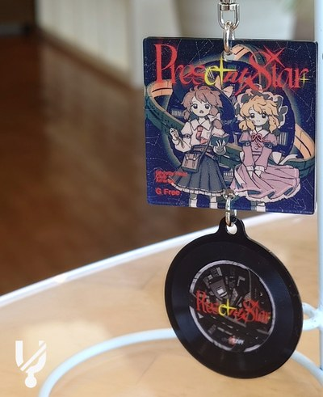
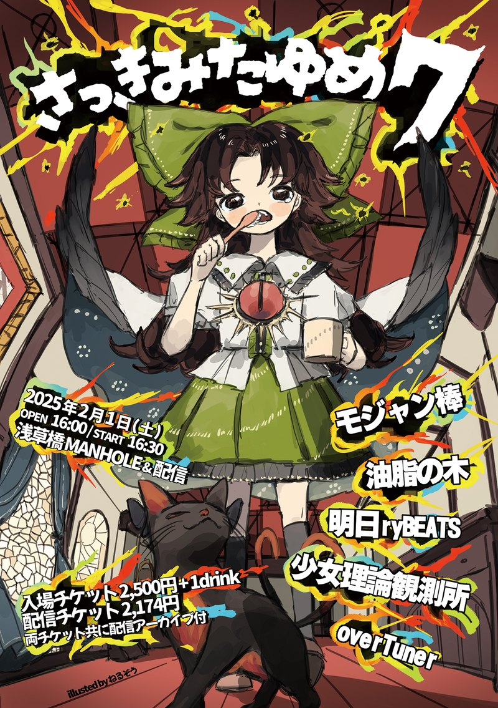
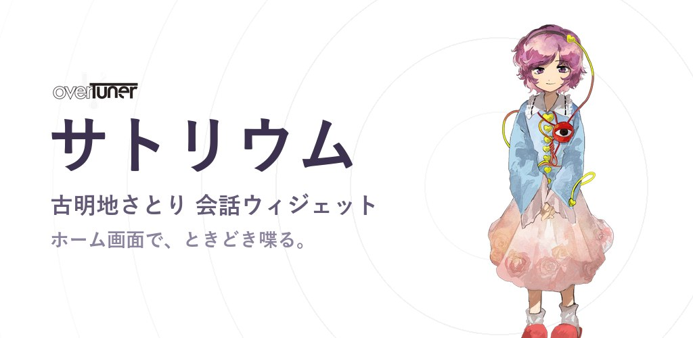

01EVENT
02WORKS


03GOODS

04LIVE

05APP

06MEMBER
- 代表 / Arrange / Vocal
- タダオ @qbittadao
- Design
- 此糸ウルヱ @nasunoSN
07CONTACT
ご連絡・ご依頼は X (@overtuner_dojin) の DM までお願いします。
各プラットフォームで公開しています。



ご連絡・ご依頼は X (@overtuner_dojin) の DM までお願いします。
各プラットフォームで公開しています。